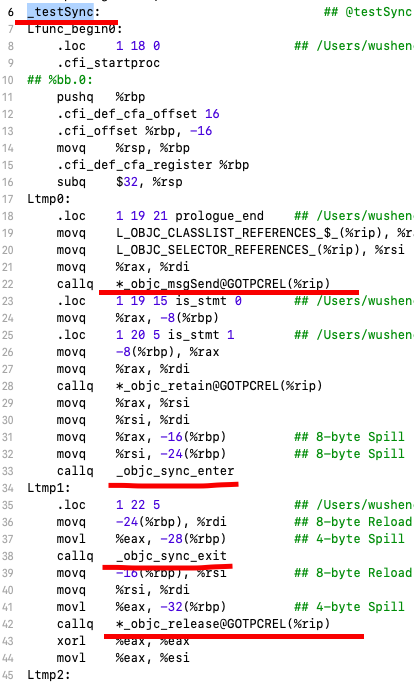

@synchronized
@synchronized 是iOS多线程同步机制中最慢的一个，同时也是最方便的一个。
那么 @synchronized 内部到底是如何实现的？如果传入一个空值会发生什么？
@synchronized 原理
首先我们可以 main.m 文件中写下如下测试代码
1 | void testSync() { |
通过 xcode (Product->Perform Action->Assemble “main.m”) 我们可以得到如下汇编代码

我们发现 @synchronized 最终被转换成如下两个函数
1 | _objc_sync_enter |
我们可以从 objc4 中找到这两个函数的源代码如下所示:
1 | typedef struct SyncData { |
从上述源代码中我们发现，
1 | synchronized 是使用的递归互斥锁来做同步。 |
递归锁是互斥锁的变体。递归锁允许单个线程在释放之前多次获取锁。其他线程保持阻塞状态，直到锁的所有者释放锁的次数与获取锁的次数相同。在递归迭代期间主要使用递归锁，也可以在多个方法分别需要获取锁的情况下使用递归锁。synchronized 递归锁内部使用的还是 pthread_mutex_t，只是加了一层ownership 的判断。
传入的 obj 对象如何被用作参数来获取 SyncData 对象
查看 static SyncData* id2data(id object, enum usage why) 函数我们发现
1 | SyncData **listp = &LIST_FOR_OBJ(object); |
而 LIST_FOR_OBJ 又指向了
1 | // Use multiple parallel lists to decrease contention among unrelated objects. |
在找到 StripedMap 我们从内部看到如下代码
1 | static unsigned int indexForPointer(const void *p) { |
indexForPointer 使用了obj的内存地址，并且做了一个简单的map，映射到另一个内存空间来存放SyncList。
通过上述我们可以得出:
synchronized中传入的object的内存地址，被用作key，通过hash map对应的一个系统维护的递归锁。
因此不管我们传入什么类型的obj，只要有内存地址，就能正确的启动代码同步块的效果
慎用 @synchronized(self)
看如下代码:
1 | //class A |
self很可能会被外部对象访问，被用作key来生成一锁，类似代码中的@synchronized (objectA)。这时两个公共锁交替使用就容易出现死锁。所以正确的做法是传入一个类内部维护的NSObject对象，而且这个对象是对外不可见的。
精准的粒度控制和注意内部函数调用
@synchronized 和其他锁对比性能上要差一点，这一点在对开发者来说可忽略不计，除了本身的原因，更多的是开发者本身不正确的使用造成的。因此正确的使用很重要。我们需要注意以下两点：
1.对于不同的临界区应该使用不同的锁
2.注意内部隐藏代码的调用
1 | @synchronized (tokenA) { |
doSomethingWithA内部可能又调用了其他函数，由此层层叠叠可能引入更多的函数调用，代码就莫名其妙的越来越慢了，感觉锁的性能差。
以上内容参考以下文章